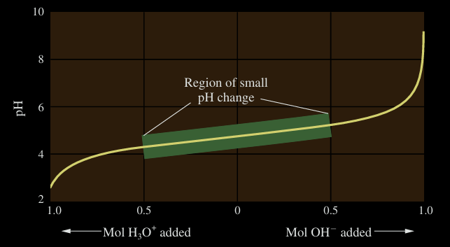

Buffer solutions are solutions of a weak acid and its conjugate base with a common ion, e.g., \(CH_3COOH\) / \(CH_3COONa\), or a weak base and its conjugate acid, e.g., \(NH_3\) / \(NH_4Cl\), which have the ability to maintain a constant pH, when a small amount of strong acid or strong base is added to them.
It is an application of the common ion effect.
In a system of a weak acid and its conjugate base, e.g., \(CH_3COOH\) / \(CH_3COONa\), the following hold:
Dissociation reactions:
(a) If acid is added: [\(H^+\)] increases. At that moment, the chemical equilibrium shifts to the left, more \(CH_3COOH\) is formed, [\(H^+\)] slightly decreases and overall [\(H^+\)] remains almost constant, so the pH remains almost unchanged.
(b) If base is added: We have an increase in [\(OH^-\)], which will bind \(H^+\). [\(H^+\)] decreases and the chemical equilibrium shifts to the right, more \(CH_3COOH\) dissociates, [\(H^+\)] increases back again, so the pH remains almost unchanged.
(c) If water is added: With the addition of water, the concentrations of acid and salt are altered, but their ratio remains constant, as long as the amounts of acid and salt do not change. Hence, the pH remains constant.
An important characteristic of a buffer are its pH and its buffer capacity, which is the amount of acid or base the buffer can react with before giving a significant pH change. Buffer capacity depends on the amount of acid and conjugate base in the solution.
This is an equation relating the pH of a buffer for different concentrations of conjugate acid and base; it is known as the Henderson-Hasselbalch equation.
\[pH = pk_a + log\frac{[base]}{[acid]}\]
Writing the formula for \(K_a\):
\[K_a = \frac{[H^+][base]}{[acid]}\]
Solving for \([H^+]\), we get:
\[[H^+] = \frac{K_a[acid]}{[base]}\]
Taking the negative log of this equation and using log properties, we get the Henderson-Hasselbach equation.
We need to find the pH of a solution of \(C_a\; CH_3COOH\) and \(C_b\; CH_3COONa\)
We notice that this solutions is a buffer because it consists of the weak acid \(CH_3COOH\) and its conjugate base. For the dissociation reactions:
| \[CH_3COONa\] | \[CH_3COO^-\] | \[Na^+\] | |
|---|---|---|---|
| Start | \[C_b\] | \[0\] | \[0\] |
| Change | \[-C_b\] | \[+C_b\] | \[+C_b\] |
| Final | 0 | \[C_b\] | \[C_b\] |
| \[CH_3COOH\] | \[CH_3COO^-\] | \[H^+\] | |
|---|---|---|---|
| Start | \(C_a\) | 0 | 0 |
| Change | \[-x\] | \[+x\] | \[+x\] |
| Final | \[C_a - x\] | \[x\] | \[x\] |
The final concentrations are \([CH_3COO^-] = C_b + x\) and \([CH_3COOH] = C_a - x\)
Because we talk about a weak acid and a weak conjugate base, \(x\ll C_a\) and \(x\ll C_b\)
Thus, we can approximate \([CH_3COOH]\approx C_a\) and \([CH_3COO^-]\approx C_b\)
From the Henderson-Hasselbach equation we easily have:
\[pH = pK_a + log\frac{C_b}{C_a}\]
Written by Fillios Memtsoudis